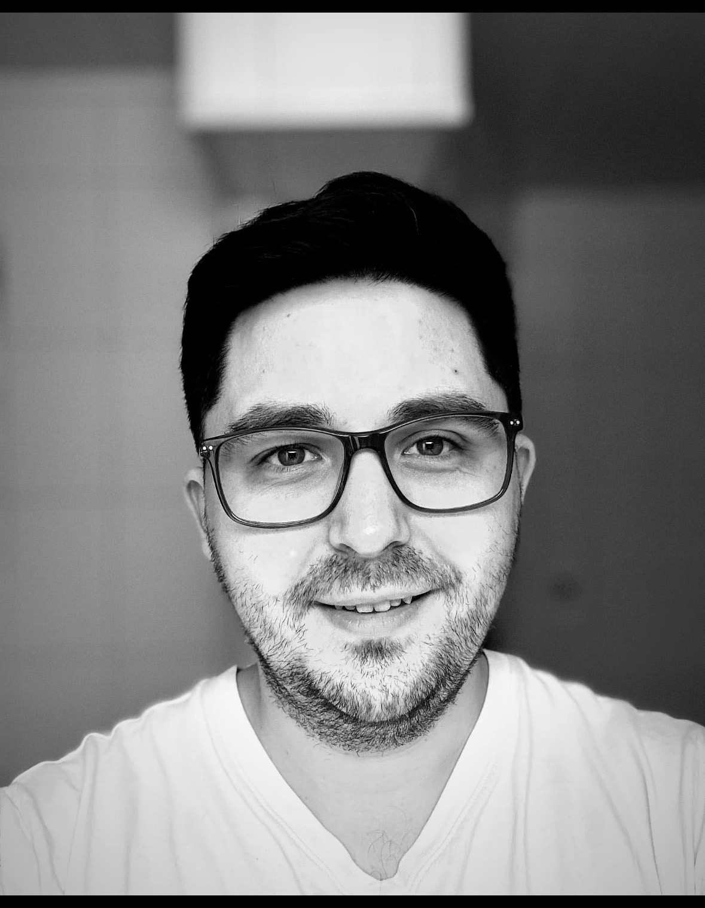

Despre
Cine sunt
Construiesc experiențe digitale care se simt bine să fie folosite.
Lucrez la intersecția dintre design și cod. Îmi place să transform idei vagi în interfețe clare, rapide și memorabile, cu atenție la fiecare detaliu, de la tipografie la mișcare.
Descrierea aceasta este un text de exemplu. Înlocuiește-l cu povestea ta.
- DisciplineDesign de interfață
- DisciplineDezvoltare web
- DisciplineThree.js și 3D
- DisciplineIdentitate vizuală
Lucrări
SelecțieContact
ContactHai să creăm ceva memorabil.
hello@exemplu.ro